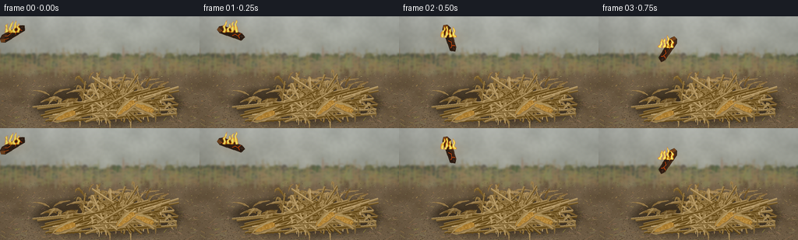
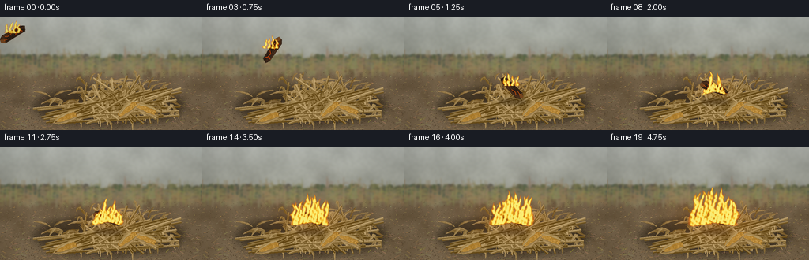

CODING AGENTS AS PIXEL WORLD MODELS
traex/GPT-6.1-Sol · material_0030
点击播放 · 原生 RGB 像素
逐轮保存的候选
回放视频、检查图与代码变化。
每份候选均可单独播放。实际图片检查记录在下方工具轨迹中。
候选 01播放与检查图
点击播放 · 原生 RGB 像素

展开代码变化
--- 上一保存版本
+++ 本次保存版本
@@ -0,0 +1,254 @@
+from pathlib import Path
+import math
+import numpy as np
+from PIL import Image, ImageDraw, ImageFilter
+from artifact_io import save
+
+ROOT=Path(__file__).resolve().parent
+W,H,S=256,144,3
+rng=np.random.default_rng(281)
+
+def noise(w,h,cell,seed):
+ r=np.random.default_rng(seed)
+ z=Image.fromarray(np.uint8(r.random((max(2,int(h/cell)+2),max(2,int(w/cell)+2)))*255))
+ return np.asarray(z.resize((w,h),Image.Resampling.BICUBIC),float)/255
+
+def line(d,pts,fill,width=1):
+ d.line([(round(x*S),round(y*S)) for x,y in pts],fill=fill,width=max(1,round(width*S)),joint='curve')
+def poly(d,pts,fill):d.polygon([(round(x*S),round(y*S)) for x,y in pts],fill=fill)
+def ellipse(d,box,fill):d.ellipse(tuple(round(v*S) for v in box),fill=fill)
+
+def curve(points,n=24):
+ pts=np.array(points);t=np.linspace(0,1,n)[:,None]
+ if len(pts)==3:return (1-t)**2*pts[0]+2*(1-t)*t*pts[1]+t*t*pts[2]
+ return (1-t)**3*pts[0]+3*(1-t)**2*t*pts[1]+3*(1-t)*t*t*pts[2]+t**3*pts[3]
+
+# A softly out-of-focus harvested field, textured earth and a close loose pile.
+y,x=np.mgrid[0:H*S,0:W*S]/S
+n1=noise(W*S,H*S,20*S,1)-.5
+n2=noise(W*S,H*S,3*S,2)-.5
+n3=noise(W*S,H*S,1,3)-.5
+sky=np.stack([180-0.47*y,184-.5*y,177-.59*y],axis=-1)
+soil=np.stack([109+0.16*(y-60),91+.14*(y-60),67+.12*(y-60)],axis=-1)
+base=np.where((y>59)[...,None],soil,sky)
+base+=n1[...,None]*17+n2[...,None]*7+n3[...,None]*3
+bg=Image.fromarray(np.uint8(np.clip(base,0,255)))
+d=ImageDraw.Draw(bg)
+# Distant hedgerow.
+for k in range(200):
+ xx=rng.uniform(-5,261); yy=55+rng.uniform(-4,4)
+ col=tuple(int(c+rng.uniform(-7,7)) for c in (91,94,74))
+ ellipse(d,(xx-4,yy-4,xx+4,yy+6),col)
+# Standing dry stalks at the far edge of the field.
+for k in range(260):
+ xx=rng.uniform(-10,267); yy=rng.uniform(65,79); ht=rng.uniform(9,29)
+ c=tuple(int(v+rng.uniform(-12,12)) for v in (142,130,92))
+ line(d,[(xx,yy),(xx+rng.uniform(-2,2),yy-ht)],c,.5)
+ for q in range(3):
+ a=yy-ht*.22*(q+1);sgn=rng.choice([-1,1])
+ p=curve([(xx,a),(xx+sgn*4,a-4),(xx+sgn*rng.uniform(5,9),a-1)])
+ line(d,p,c,.7)
+bg=bg.filter(ImageFilter.GaussianBlur(1.1*S))
+d=ImageDraw.Draw(bg)
+# Earth pebbles and harvest litter in perspective.
+for k in range(4700):
+ yy=rng.uniform(69,146);xx=rng.uniform(0,256);f=(yy-60)/84
+ c=np.array([105,88,66])+rng.uniform(-26,24)
+ cc=tuple(np.uint8(np.clip(c,0,255)))
+ rr=rng.uniform(.1,.6)*f
+ ellipse(d,(xx-rr,yy-rr*.42,xx+rr,yy+rr*.42),cc)
+for k in range(630):
+ xx=rng.uniform(0,256);yy=rng.uniform(75,147);sz=rng.uniform(1,8)*(yy-58)/86
+ a=rng.uniform(-.9,.9)
+ c=tuple(int(v+rng.uniform(-20,25)) for v in (160,135,88))
+ line(d,[(xx,yy),(xx+sz*math.cos(a),yy+sz*math.sin(a))],c,rng.uniform(.2,.55))
+# Contact shadow.
+shadow=Image.new('RGBA',bg.size)
+sd=ImageDraw.Draw(shadow)
+ellipse(sd,(42,88,233,139),(33,24,13,145))
+ellipse(sd,(65,100,221,132),(29,19,10,155))
+shadow=shadow.filter(ImageFilter.GaussianBlur(5*S))
+bg=Image.alpha_composite(bg.convert('RGBA'),shadow).convert('RGB')
+
+# Draw leaves with a folded central ridge and irregular fine longitudinal veins.
+def leaf(d,points,width,col,seed):
+ rr=np.random.default_rng(seed)
+ p=curve(points,30); tangent=np.gradient(p,axis=0)
+ tangent/=np.maximum(np.linalg.norm(tangent,axis=1)[:,None],1e-6)
+ normal=np.stack([-tangent[:,1],tangent[:,0]],1)
+ t=np.linspace(0,1,len(p))
+ widths=width*(np.sin(np.pi*t)**.75)*(0.8+.2*np.sin(t*20+seed))
+ ridge=p+normal*(np.sin(t*5)*width*.14)[:,None]
+ a=p+normal*widths[:,None]*.48;b=p-normal*widths[:,None]*.52
+ col=np.array(col)
+ for j in range(len(p)-1):
+ v=7*np.sin(t[j]*7+seed)
+ poly(d,[a[j],a[j+1],ridge[j+1],ridge[j]],tuple(np.uint8(np.clip(col+v+8,0,255))))
+ poly(d,[ridge[j],ridge[j+1],b[j+1],b[j]],tuple(np.uint8(np.clip(col+v-13,0,255))))
+ line(d,ridge,tuple(np.uint8(np.clip(col+22,0,255))),.35)
+ line(d,a,tuple(np.uint8(np.clip(col-24,0,255))),.21)
+ for v in [-.34,-.15,.18,.34]:
+ edge=p+normal*(widths*v)[:,None]
+ line(d,edge,tuple(np.uint8(np.clip(col+(6 if v>0 else -10),0,255))),.16)
+ for k in range(3):
+ j=int(rr.integers(6,24))
+ line(d,[b[j],ridge[min(j+2,29)]],tuple(np.uint8(np.clip(col-32,0,255))),.22)
+
+pile=Image.new('RGBA',bg.size)
+pd=ImageDraw.Draw(pile)
+# Underlying husks in the mound.
+for k in range(105):
+ xx=rng.uniform(61,219); frac=max(0,1-((xx-141)/83)**2)
+ yy=rng.uniform(101-22*frac,128)
+ ang=rng.uniform(-math.pi,math.pi);ln=rng.uniform(13,38)
+ v=np.array([math.cos(ang),.45*math.sin(ang)])
+ p=np.array([xx,yy]);end=p+v*ln
+ col=np.array([153,124,76])+rng.uniform(-34,24)
+ leaf(pd,[p,p+v*ln*.3+[0,-rng.uniform(2,7)],end],rng.uniform(2,5),col,k)
+# Loose dry corn stalks, with joints and long curled blades.
+stalks=[]
+for k in range(68):
+ a=np.array([rng.uniform(40,129),rng.uniform(110,135)])
+ b=np.array([rng.uniform(146,231),rng.uniform(90,127)])
+ if k%3==0:
+ a=np.array([rng.uniform(85,202),rng.uniform(128,137)])
+ b=np.array([rng.uniform(106,178),rng.uniform(73,100)])
+ stalks.append((a,b))
+for k,(a,b) in enumerate(stalks):
+ v=b-a;L=np.linalg.norm(v);n=np.array([-v[1],v[0]])/L
+ col=np.array([165,137,86])+rng.uniform(-27,23)
+ wid=rng.uniform(.85,1.9)
+ line(pd,[a+[0,1],b+[0,1]],tuple(np.uint8(np.clip(col-44,0,255))),wid+1)
+ line(pd,[a,b],tuple(np.uint8(np.clip(col,0,255))),wid)
+ line(pd,[a-n*wid*.22,b-n*wid*.22],tuple(np.uint8(np.clip(col+27,0,255))),wid*.24)
+ for t in [.19,.43,.68,.9]:
+ p=a+t*v
+ line(pd,[p-n*wid*.7,p+n*wid*.7],tuple(np.uint8(np.clip(col-41,0,255))),.55)
+ line(pd,[p-n*wid*.7+v/L*.5,p+n*wid*.7+v/L*.5],tuple(np.uint8(np.clip(col+16,0,255))),.35)
+ if rng.random()<.59:
+ sign=rng.choice([-1,1]);ln=rng.uniform(12,28)
+ tip=p+v/L*ln*.35+n*ln*.5*sign+[0,rng.uniform(1,7)]
+ mid=p+v/L*ln*.45+n*ln*.38*sign+[0,-rng.uniform(3,8)]
+ leaf(pd,[p,mid,tip],rng.uniform(2,5),col+rng.uniform(-15,14),1000+k*10+int(t*10))
+# Corn ears peeking out of papery dry husks.
+for k,(cx,cy,angle) in enumerate([(81,113,-.32),(181,110,.42),(159,91,-.63)]):
+ ear=Image.new('RGBA',(66*S,20*S));ed=ImageDraw.Draw(ear)
+ ellipse(ed,(3,4,32,15),(93,61,24,255))
+ ellipse(ed,(4,4,32,13),(166,119,46,255))
+ er=np.random.default_rng(70+k)
+ for row in range(4):
+ for q in range(16):
+ xx=5+q*1.65+row%2*.6;yy=5+row*1.9
+ if ((xx-18)/14)**2+((yy-9)/5)**2<1:
+ c=np.array([191,144,63])+er.uniform(-20,15)
+ ellipse(ed,(xx,yy,xx+1.35,yy+1.5),tuple(np.uint8(c))+(255,))
+ leaf(ed,[(0,10),(9,17),(37,12)],4,[166,137,87],901+k)
+ leaf(ed,[(1,11),(14,2),(37,5)],4,[178,150,95],904+k)
+ ear=ear.rotate(-angle*180/math.pi,resample=Image.Resampling.BICUBIC,expand=True)
+ pile.alpha_composite(ear,(int((cx-18)*S),int((cy-9)*S)))
+scene=Image.alpha_composite(bg.convert('RGBA'),pile).convert('RGB')
+
+# Charred burning piece of wood, bark, splinters and glowing cracks.
+wood=Image.new('RGBA',(42*S,17*S));wd=ImageDraw.Draw(wood)
+poly(wd,[(3,5),(8,2),(34,3),(39,6),(36,12),(7,13),(2,10)],(48,32,21,255))
+poly(wd,[(8,3),(34,3),(37,6),(9,8),(3,6)],(72,45,27,255))
+poly(wd,[(3,6),(8,8),(7,12),(2,10)],(118,70,31,255))
+rw=np.random.default_rng(41)
+for k in range(90):
+ xx=rw.uniform(7,34);yy=rw.uniform(4,11);ll=rw.uniform(1,5)
+ c=rw.choice([29,35,48,59,72]);line(wd,[(xx,yy),(xx+ll,yy+rw.uniform(-.4,.4))],(c,int(c*.66),int(c*.48),255),rw.uniform(.2,.6))
+for pts in [[(10,5),(14,7),(19,6)],[(23,10),(26,7),(30,8)],[(32,4),(30,7),(33,10)],[(7,9),(13,10)]]:
+ line(wd,pts,(148,42,8,255),.85);line(wd,pts,(255,122,23,255),.3)
+
+# Turbulent, luminous flames built from moving tapered hot-gas columns.
+Y,X=np.mgrid[0:H*S,0:W*S]/S
+fine=noise(W*S,H*S,1.8*S,115)
+coarse=noise(W*S,H*S,5*S,116)
+def flames(canvas,t,sources):
+ field=np.zeros((H*S,W*S),np.float32)
+ for i,(cx,cy,height,width) in enumerate(sources):
+ z=(cy-Y)/height
+ wave=np.sin(z*8+t*6+i*2)*width*.21+np.sin(z*15-t*4+i)*width*.12
+ wave+=z*z*(math.sin(t*3+i)*3+1.2)
+ ww=width*np.maximum(0,1-z)**.64*(.9+.15*np.sin(z*12+t*8+i))
+ dist=(X-cx-wave)/(ww+0.2)
+ f=np.exp(-dist*dist*1.9)*np.clip((1-z)*4,0,1)
+ f*=np.clip((z+.09)*20,0,1)*(z<1)
+ field=np.maximum(field,f)
+ turbulent=.17*np.sin(X*1.5+Y*.48+t*11)+.14*np.sin(X*.72-Y*.93-t*7)
+ turbulent+=(np.roll(fine,int(t*8*S),axis=0)-.5)*.32+(coarse-.5)*.14
+ f=field+turbulent*field
+ alpha=np.clip((f-.15)*1.7,0,.97)
+ hot=np.clip((f-.27)/.64,0,1)
+ r=np.full_like(f,255);g=48+194*hot**.65;b=3+115*hot**2.4
+ rgba=np.uint8(np.stack([r,g,b,alpha*255],-1))
+ return Image.alpha_composite(canvas,Image.fromarray(rgba,'RGBA'))
+
+frames=[]
+for frame in range(20):
+ t=frame/4
+ im=scene.copy().convert('RGBA')
+ # Flight: enters from upper left, then tumbles and settles visibly on the mound.
+ if frame<=5:
+ u=frame/5
+ wx=17+119*u;wy=23-19*u+86*u*u
+ angle=30-255*u
+ else:
+ wx=136+(1.2 if frame==6 else 0);wy=92;angle=-21
+ # Moving soft shadow grounds the tossed ember.
+ sh=Image.new('RGBA',im.size);sd=ImageDraw.Draw(sh)
+ ellipse(sd,(wx-18,104,wx+19,112),(24,13,5,int(25+65*min(1,(wy/92)**2))))
+ im=Image.alpha_composite(im,sh.filter(ImageFilter.GaussianBlur(2*S)))
+ burn=max(0,(t-1.25)/3.5)
+ # A thin rising plume, increasing as dry leaves catch.
+ smoke=Image.new('RGBA',im.size)
+ sm=np.zeros((H*S,W*S),float)
+ if frame>=5:
+ for i in range(18):
+ age=((t*.47+i/18)%1)
+ sy=87-age*(45+burn*35)
+ sx=138+age*22+math.sin(age*9+t*.8)*4
+ radius=3+age*(8+burn*5)
+ sm+=np.exp(-((X-sx)**2/(radius**2*1.9)+(Y-sy)**2/(radius**2)))*(.3+.5*burn)*(1-age)*.13
+ sm*=.7+.5*coarse+.3*fine
+ a=np.clip(sm*255,0,83)
+ smoke=Image.fromarray(np.uint8(np.stack([np.full_like(a,97),np.full_like(a,92),np.full_like(a,84),a],-1)),'RGBA')
+ smoke=smoke.filter(ImageFilter.GaussianBlur(.65*S))
+ im=Image.alpha_composite(im,smoke)
+ # Local reflected light grows around the ignition point.
+ ar=np.asarray(im).copy().astype(float)
+ glow=np.exp(-((X-wx)**2/(20+30*burn)**2+(Y-(wy-1))**2/(11+12*burn)**2))*(.07+.16*burn)
+ ar[...,:3]=ar[...,:3]*(1-glow[...,None])+np.array([239,129,29])*glow[...,None]
+ im=Image.fromarray(np.uint8(np.clip(ar,0,255)),'RGBA')
+ wr=wood.rotate(angle,resample=Image.Resampling.BICUBIC,expand=True)
+ im.alpha_composite(wr,(int(wx*S-wr.width/2),int(wy*S-wr.height/2)))
+ sources=[]
+ if frame<6:
+ for j in range(4):
+ sources.append((wx-9+j*5,wy-3,12+5*math.sin(t*8+j)**2,3.2))
+ else:
+ for j in range(11):
+ xx=136+(j-5)*(1.7+3.5*burn)
+ yy=94+abs(j-5)*.8
+ spread=np.clip((burn*1.8+.3)-abs(j-5)*.075,.08,1)
+ hh=(15+25*burn)*spread*(.8+.28*math.sin(t*7+j*3)**2)
+ sources.append((xx,yy,hh,3+4*burn))
+ sources.extend([(132,92,20+burn*25,4+burn*2),(142,94,18+burn*28,4+burn*2)])
+ im=flames(im,t,sources)
+ # Small incandescent flecks follow upward buoyant trajectories, not random flicker.
+ emb=Image.new('RGBA',im.size);ed=ImageDraw.Draw(emb)
+ for j in range(14 if frame>=6 else 3):
+ age=(t*.64+j*.213)%1
+ xx=wx+math.sin(j*9)*9+age*(5+burn*9)+math.sin(age*7+j)*2
+ yy=wy-4-age*(19+28*burn)
+ if age<.85:
+ line(ed,[(xx,yy),(xx-.25,yy+1+age)],(255,177,51,int(210*(1-age))),.35)
+ im=Image.alpha_composite(im,emb)
+ # Lens softness and a subtle vignette; render down to the requested RGB size.
+ out=np.array(im.convert('RGB').resize((W,H),Image.Resampling.LANCZOS)).astype(float)
+ yy,xx=np.mgrid[0:H,0:W]
+ vignette=1-.13*((xx-133)/155)**2-.09*((yy-82)/110)**2
+ out*=vignette[...,None]
+ frames.append(np.uint8(np.clip(out,0,255)))
+save(np.stack(frames),ROOT)
+print('Saved 20 RGB frames and player artifacts.')
候选 02播放与检查图
点击播放 · 原生 RGB 像素


展开代码变化
--- 上一保存版本
+++ 本次保存版本
@@ -168,9 +168,9 @@
field=np.zeros((H*S,W*S),np.float32)
for i,(cx,cy,height,width) in enumerate(sources):
z=(cy-Y)/height
- wave=np.sin(z*8+t*6+i*2)*width*.21+np.sin(z*15-t*4+i)*width*.12
+ wave=np.sin(z*6+t*5+i*2)*width*.28+np.sin(z*12-t*4+i)*width*.14
wave+=z*z*(math.sin(t*3+i)*3+1.2)
- ww=width*np.maximum(0,1-z)**.64*(.9+.15*np.sin(z*12+t*8+i))
+ ww=width*np.maximum(0,1-z)**.72*(.9+.20*np.sin(z*9+t*8+i))
dist=(X-cx-wave)/(ww+0.2)
f=np.exp(-dist*dist*1.9)*np.clip((1-z)*4,0,1)
f*=np.clip((z+.09)*20,0,1)*(z<1)
@@ -182,7 +182,7 @@
hot=np.clip((f-.27)/.64,0,1)
r=np.full_like(f,255);g=48+194*hot**.65;b=3+115*hot**2.4
rgba=np.uint8(np.stack([r,g,b,alpha*255],-1))
- return Image.alpha_composite(canvas,Image.fromarray(rgba,'RGBA'))
+ return Image.alpha_composite(canvas,Image.fromarray(rgba))
frames=[]
for frame in range(20):
@@ -200,6 +200,13 @@
ellipse(sd,(wx-18,104,wx+19,112),(24,13,5,int(25+65*min(1,(wy/92)**2))))
im=Image.alpha_composite(im,sh.filter(ImageFilter.GaussianBlur(2*S)))
burn=max(0,(t-1.25)/3.5)
+ if burn>0:
+ # Heat darkens the papery leaves while preserving their folds and fibers.
+ ar=np.array(im).astype(float)
+ char=np.exp(-((X-136)/(12+21*burn))**2-((Y-96)/(5+7*burn))**2)*burn*.7
+ char*=np.clip((Y-88)/7,0,1)
+ ar[...,:3]*=1-char[...,None]
+ im=Image.fromarray(np.uint8(ar))
# A thin rising plume, increasing as dry leaves catch.
smoke=Image.new('RGBA',im.size)
sm=np.zeros((H*S,W*S),float)
@@ -209,17 +216,17 @@
sy=87-age*(45+burn*35)
sx=138+age*22+math.sin(age*9+t*.8)*4
radius=3+age*(8+burn*5)
- sm+=np.exp(-((X-sx)**2/(radius**2*1.9)+(Y-sy)**2/(radius**2)))*(.3+.5*burn)*(1-age)*.13
+ sm+=np.exp(-((X-sx)**2/(radius**2*1.9)+(Y-sy)**2/(radius**2)))*(.3+.65*burn)*(1-age)*.18
sm*=.7+.5*coarse+.3*fine
a=np.clip(sm*255,0,83)
- smoke=Image.fromarray(np.uint8(np.stack([np.full_like(a,97),np.full_like(a,92),np.full_like(a,84),a],-1)),'RGBA')
+ smoke=Image.fromarray(np.uint8(np.stack([np.full_like(a,97),np.full_like(a,92),np.full_like(a,84),a],-1)))
smoke=smoke.filter(ImageFilter.GaussianBlur(.65*S))
im=Image.alpha_composite(im,smoke)
# Local reflected light grows around the ignition point.
ar=np.asarray(im).copy().astype(float)
glow=np.exp(-((X-wx)**2/(20+30*burn)**2+(Y-(wy-1))**2/(11+12*burn)**2))*(.07+.16*burn)
ar[...,:3]=ar[...,:3]*(1-glow[...,None])+np.array([239,129,29])*glow[...,None]
- im=Image.fromarray(np.uint8(np.clip(ar,0,255)),'RGBA')
+ im=Image.fromarray(np.uint8(np.clip(ar,0,255)))
wr=wood.rotate(angle,resample=Image.Resampling.BICUBIC,expand=True)
im.alpha_composite(wr,(int(wx*S-wr.width/2),int(wy*S-wr.height/2)))
sources=[]
@@ -231,8 +238,8 @@
xx=136+(j-5)*(1.7+3.5*burn)
yy=94+abs(j-5)*.8
spread=np.clip((burn*1.8+.3)-abs(j-5)*.075,.08,1)
- hh=(15+25*burn)*spread*(.8+.28*math.sin(t*7+j*3)**2)
- sources.append((xx,yy,hh,3+4*burn))
+ hh=(14+35*burn)*spread*(.6+.42*math.sin(t*6+j*2.37)**2)*(1-abs(j-5)*.052)
+ sources.append((xx+math.sin(t*3+j)*1.1,yy,hh,(3+4*burn)*(.8+.25*math.sin(j*7)**2)))
sources.extend([(132,92,20+burn*25,4+burn*2),(142,94,18+burn*28,4+burn*2)])
im=flames(im,t,sources)
# Small incandescent flecks follow upward buoyant trajectories, not random flicker.
候选 03播放与检查图
可观测工具轨迹
实际执行的命令与返回图片。
命令 1exit 0
/bin/bash -lc 'ls -la; cat prompt.txt; cat GENERATION_RULES.md; cat task_spec.json'
命令 2exit 0
/bin/bash -lc "cat artifact_io.py; ls .agents; python - <<'PY'
import PIL,numpy
print('ok')
PY"命令 3exit 0
/bin/bash -lc "cat > generate.py <<'PY'
from pathlib import Path
import math
import numpy as np
from PIL import Image, ImageDraw, ImageFilter
from artifact_io import save
ROOT=Path(__file__).resolve().parent
W,H,S=256,144,3
rng=np.random.default_rng(281)
def noise(w,h,cell,seed):
r=np.random.default_rng(seed)
z=Image.fromarray(np.uint8(r.random((max(2,int(h/cell)+2),max(2,int(w/cell)+2)))*255))
return np.asarray(z.resize((w,h),Image.Resampling.BICUBIC),float)/255
def line(d,pts,fill,width=1):
d.line([(round(x*S),round(y*S)) for x,y in pts],fill=fill,width=max(1,round(width*S)),joint='curve')
def poly(d,pts,fill):d.polygon([(round(x*S),round(y*S)) for x,y in pts],fill=fill)
def ellipse(d,box,fill):d.ellipse(tuple(round(v*S) for v in box),fill=fill)
def curve(points,n=24):
pts=np.array(points);t=np.linspace(0,1,n)[:,None]
if len(pts)==3:return (1-t)**2*pts[0]+2*(1-t)*t*pts[1]+t*t*pts[2]
return (1-t)**3*pts[0]+3*(1-t)**2*t*pts[1]+3*(1-t)*t*t*pts[2]+t**3*pts[3]
# A softly out-of-focus harvested field, textured earth and a close loose pile.
y,x=np.mgrid[0:H*S,0:W*S]/S
n1=noise(W*S,H*S,20*S,1)-.5
n2=noise(W*S,H*S,3*S,2)-.5
n3=noise(W*S,H*S,1,3)-.5
sky=np.stack([180-0.47*y,184-.5*y,177-.59*y],axis=-1)
soil=np.stack([109+0.16*(y-60),91+.14*(y-60),67+.12*(y-60)],axis=-1)
base=np.where((y>59)[...,None],soil,sky)
base+=n1[...,None]*17+n2[...,None]*7+n3[...,None]*3
bg=Image.fromarray(np.uint8(np.clip(base,0,255)))
d=ImageDraw.Draw(bg)
# Distant hedgerow.
for k in range(200):
xx=rng.uniform(-5,261); yy=55+rng.uniform(-4,4)
col=tuple(int(c+rng.uniform(-7,7)) for c in (91,94,74))
ellipse(d,(xx-4,yy-4,xx+4,yy+6),col)
# Standing dry stalks at the far edge of the field.
for k in range(260):
xx=rng.uniform(-10,267); yy=rng.uniform(65,79); ht=rng.uniform(9,29)
c=tuple(int(v+rng.uniform(-12,12)) for v in (142,130,92))
line(d,[(xx,yy),(xx+rng.uniform(-2,2),yy-ht)],c,.5)
for q in range(3):
a=yy-ht*.22*(q+1);sgn=rng.choice([-1,1])
p=curve([(xx,a),(xx+sgn*4,a-4),(xx+sgn*rng.uniform(5,9),a-1)])
line(d,p,c,.7)
bg=bg.filter(ImageFilter.GaussianBlur(1.1*S))
d=ImageDraw.Draw(bg)
# Earth pebbles and harvest litter in perspective.
for k in range(4700):
yy=rng.uniform(69,146);xx=rng.uniform(0,256);f=(yy-60)/84
c=np.array([105,88,66])+rng.uniform(-26,24)
cc=tuple(np.uint8(np.clip(c,0,255)))
rr=rng.uniform(.1,.6)*f
ellipse(d,(xx-rr,yy-rr*.42,xx+rr,yy+rr*.42),cc)
for k in range(630):
xx=rng.uniform(0,256);yy=rng.uniform(75,147);sz=rng.uniform(1,8)*(yy-58)/86
a=rng.uniform(-.9,.9)
c=tuple(int(v+rng.uniform(-20,25)) for v in (160,135,88))
line(d,[(xx,yy),(xx+sz*math.cos(a),yy+sz*math.sin(a))],c,rng.uniform(.2,.55))
# Contact shadow.
shadow=Image.new('RGBA',bg.size)
sd=ImageDraw.Draw(shadow)
ellipse(sd,(42,88,233,139),(33,24,13,145))
ellipse(sd,(65,100,221,132),(29,19,10,155))
shadow=shadow.filter(ImageFilter.GaussianBlur(5*S))
bg=Image.alpha_composite(bg.convert('RGBA'),shadow).convert('RGB')
# Draw leaves with a folded central ridge and irregular fine longitudinal veins.
def leaf(d,points,width,col,seed):
rr=np.random.default_rng(seed)
p=curve(points,30); tangent=np.gradient(p,axis=0)
tangent/=np.maximum(np.linalg.norm(tangent,axis=1)[:,None],1e-6)
normal=np.stack([-tangent[:,1],tangent[:,0]],1)
t=np.linspace(0,1,len(p))
widths=width*(np.sin(np.pi*t)**.75)*(0.8+.2*np.sin(t*20+seed))
ridge=p+normal*(np.sin(t*5)*width*.14)[:,None]
a=p+normal*widths[:,None]*.48;b=p-normal*widths[:,None]*.52
col=np.array(col)
for j in range(len(p)-1):
v=7*np.sin(t[j]*7+seed)
poly(d,[a[j],a[j+1],ridge[j+1],ridge[j]],tuple(np.uint8(np.clip(col+v+8,0,255))))
poly(d,[ridge[j],ridge[j+1],b[j+1],b[j]],tuple(np.uint8(np.clip(col+v-13,0,255))))
line(d,ridge,tuple(np.uint8(np.clip(col+22,0,255))),.35)
line(d,a,tuple(np.uint8(np.clip(col-24,0,255))),.21)
for v in [-.34,-.15,.18,.34]:
edge=p+normal*(widths*v)[:,None]
line(d,edge,tuple(np.uint8(np.clip(col+(6 if v>0 else -10),0,255))),.16)
for k in range(3):
j=int(rr.integers(6,24))
line(d,[b[j],ridge[min(j+2,29)]],tuple(np.uint8(np.clip(col-32,0,255))),.22)
pile=Image.new('RGBA',bg.size)
pd=ImageDraw.Draw(pile)
# Underlying husks in the mound.
for k in range(105):
xx=rng.uniform(61,219); frac=max(0,1-((xx-141)/83)**2)
yy=rng.uniform(101-22*frac,128)
ang=rng.uniform(-math.pi,math.pi);ln=rng.uniform(13,38)
v=np.array([math.cos(ang),.45*math.sin(ang)])
p=np.array([xx,yy]);end=p+v*ln
col=np.array([153,124,76])+rng.uniform(-34,24)
leaf(pd,[p,p+v*ln*.3+[0,-rng.uniform(2,7)],end],rng.uniform(2,5),col,k)
# Loose dry corn stalks, with joints and long curled blades.
stalks=[]
for k in range(68):
a=np.array([rng.uniform(40,129),rng.uniform(110,135)])
b=np.array([rng.uniform(146,231),rng.uniform(90,127)])
if k%3==0:
a=np.array([rng.uniform(85,202),rng.uniform(128,137)])
b=np.array([rng.uniform(106,178),rng.uniform(73,100)])
stalks.append((a,b))
for k,(a,b) in enumerate(stalks):
v=b-a;L=np.linalg.norm(v);n=np.array([-v[1],v[0]])/L
col=np.array([165,137,86])+rng.uniform(-27,23)
wid=rng.uniform(.85,1.9)
line(pd,[a+[0,1],b+[0,1]],tuple(np.uint8(np.clip(col-44,0,255))),wid+1)
line(pd,[a,b],tuple(np.uint8(np.clip(col,0,255))),wid)
line(pd,[a-n*wid*.22,b-n*wid*.22],tuple(np.uint8(np.clip(col+27,0,255))),wid*.24)
for t in [.19,.43,.68,.9]:
p=a+t*v
line(pd,[p-n*wid*.7,p+n*wid*.7],tuple(np.uint8(np.clip(col-41,0,255))),.55)
line(pd,[p-n*wid*.7+v/L*.5,p+n*wid*.7+v/L*.5],tuple(np.uint8(np.clip(col+16,0,255))),.35)
if rng.random()<.59:
sign=rng.choice([-1,1]);ln=rng.uniform(12,28)
tip=p+v/L*ln*.35+n*ln*.5*sign+[0,rng.uniform(1,7)]
mid=p+v/L*ln*.45+n*ln*.38*sign+[0,-rng.uniform(3,8)]
leaf(pd,[p,mid,tip],rng.uniform(2,5),col+rng.uniform(-15,14),1000+k*10+int(t*10))
# Corn ears peeking out of papery dry husks.
for k,(cx,cy,angle) in enumerate([(81,113,-.32),(181,110,.42),(159,91,-.63)]):
ear=Image.new('RGBA',(66*S,20*S));ed=ImageDraw.Draw(ear)
ellipse(ed,(3,4,32,15),(93,61,24,255))
ellipse(ed,(4,4,32,13),(166,119,46,255))
er=np.random.default_rng(70+k)
for row in range(4):
for q in range(16):
xx=5+q*1.65+row%2*.6;yy=5+row*1.9
if ((xx-18)/14)**2+((yy-9)/5)**2<1:
c=np.array([191,144,63])+er.uniform(-20,15)
ellipse(ed,(xx,yy,xx+1.35,yy+1.5),tuple(np.uint8(c))+(255,))
leaf(ed,[(0,10),(9,17),(37,12)],4,[166,137,87],901+k)
leaf(ed,[(1,11),(14,2),(37,5)],4,[178,150,95],904+k)
ear=ear.rotate(-angle*180/math.pi,resample=Image.Resampling.BICUBIC,expand=True)
pile.alpha_composite(ear,(int((cx-18)*S),int((cy-9)*S)))
scene=Image.alpha_composite(bg.convert('RGBA'),pile).convert('RGB')
# Charred burning piece of wood, bark, splinters and glowing cracks.
wood=Image.new('RGBA',(42*S,17*S));wd=ImageDraw.Draw(wood)
poly(wd,[(3,5),(8,2),(34,3),(39,6),(36,12),(7,13),(2,10)],(48,32,21,255))
poly(wd,[(8,3),(34,3),(37,6),(9,8),(3,6)],(72,45,27,255))
poly(wd,[(3,6),(8,8),(7,12),(2,10)],(118,70,31,255))
rw=np.random.default_rng(41)
for k in range(90):
xx=rw.uniform(7,34);yy=rw.uniform(4,11);ll=rw.uniform(1,5)
c=rw.choice([29,35,48,59,72]);line(wd,[(xx,yy),(xx+ll,yy+rw.uniform(-.4,.4))],(c,int(c*.66),int(c*.48),255),rw.uniform(.2,.6))
for pts in [[(10,5),(14,7),(19,6)],[(23,10),(26,7),(30,8)],[(32,4),(30,7),(33,10)],[(7,9),(13,10)]]:
line(wd,pts,(148,42,8,255),.85);line(wd,pts,(255,122,23,255),.3)
# Turbulent, luminous flames built from moving tapered hot-gas columns.
Y,X=np.mgrid[0:H*S,0:W*S]/S
fine=noise(W*S,H*S,1.8*S,115)
coarse=noise(W*S,H*S,5*S,116)
def flames(canvas,t,sources):
field=np.zeros((H*S,W*S),np.float32)
for i,(cx,cy,height,width) in enumerate(sources):
z=(cy-Y)/height
wave=np.sin(z*8+t*6+i*2)*width*.21+np.sin(z*15-t*4+i)*width*.12
wave+=z*z*(math.sin(t*3+i)*3+1.2)
ww=width*np.maximum(0,1-z)**.64*(.9+.15*np.sin(z*12+t*8+i))
dist=(X-cx-wave)/(ww+0.2)
f=np.exp(-dist*dist*1.9)*np.clip((1-z)*4,0,1)
f*=np.clip((z+.09)*20,0,1)*(z<1)
field=np.maximum(field,f)
turbulent=.17*np.sin(X*1.5+Y*.48+t*11)+.14*np.sin(X*.72-Y*.93-t*7)
turbulent+=(np.roll(fine,int(t*8*S),axis=0)-.5)*.32+(coarse-.5)*.14
f=field+turbulent*field
alpha=np.clip((f-.15)*1.7,0,.97)
hot=np.clip((f-.27)/.64,0,1)
r=np.full_like(f,255);g=48+194*hot**.65;b=3+115*hot**2.4
rgba=np.uint8(np.stack([r,g,b,alpha*255],-1))
return Image.alpha_composite(canvas,Image.fromarray(rgba,'RGBA'))
frames=[]
for frame in range(20):
t=frame/4
im=scene.copy().convert('RGBA')
# Flight: enters from upper left, then tumbles and settles visibly on the mound.
if frame<=5:
u=frame/5
wx=17+119*u;wy=23-19*u+86*u*u
angle=30-255*u
else:
wx=136+(1.2 if frame==6 else 0);wy=92;angle=-21
# Moving soft shadow grounds the tossed ember.
sh=Image.new('RGBA',im.size);sd=ImageDraw.Draw(sh)
ellipse(sd,(wx-18,104,wx+19,112),(24,13,5,int(25+65*min(1,(wy/92)**2))))
im=Image.alpha_composite(im,sh.filter(ImageFilter.GaussianBlur(2*S)))
burn=max(0,(t-1.25)/3.5)
# A thin rising plume, increasing as dry leaves catch.
smoke=Image.new('RGBA',im.size)
sm=np.zeros((H*S,W*S),float)
if frame>=5:
for i in range(18):
age=((t*.47+i/18)%1)
sy=87-age*(45+burn*35)
sx=138+age*22+math.sin(age*9+t*.8)*4
radius=3+age*(8+burn*5)
sm+=np.exp(-((X-sx)**2/(radius**2*1.9)+(Y-sy)**2/(radius**2)))*(.3+.5*burn)*(1-age)*.13
sm*=.7+.5*coarse+.3*fine
a=np.clip(sm*255,0,83)
smoke=Image.fromarray(np.uint8(np.stack([np.full_like(a,97),np.full_like(a,92),np.full_like(a,84),a],-1)),'RGBA')
smoke=smoke.filter(ImageFilter.GaussianBlur(.65*S))
im=Image.alpha_composite(im,smoke)
# Local reflected light grows around the ignition point.
ar=np.asarray(im).copy().astype(float)
glow=np.exp(-((X-wx)**2/(20+30*burn)**2+(Y-(wy-1))**2/(11+12*burn)**2))*(.07+.16*burn)
ar[...,:3]=ar[...,:3]*(1-glow[...,None])+np.array([239,129,29])*glow[...,None]
im=Image.fromarray(np.uint8(np.clip(ar,0,255)),'RGBA')
wr=wood.rotate(angle,resample=Image.Resampling.BICUBIC,expand=True)
im.alpha_composite(wr,(int(wx*S-wr.width/2),int(wy*S-wr.height/2)))
sources=[]
if frame<6:
for j in range(4):
sources.append((wx-9+j*5,wy-3,12+5*math.sin(t*8+j)**2,3.2))
else:
for j in range(11):
xx=136+(j-5)*(1.7+3.5*burn)
yy=94+abs(j-5)*.8
spread=np.clip((burn*1.8+.3)-abs(j-5)*.075,.08,1)
hh=(15+25*burn)*spread*(.8+.28*math.sin(t*7+j*3)**2)
sources.append((xx,yy,hh,3+4*burn))
sources.extend([(132,92,20+burn*25,4+burn*2),(142,94,18+burn*28,4+burn*2)])
im=flames(im,t,sources)
# Small incandescent flecks follow upward buoyant trajectories, not random flicker.
emb=Image.new('RGBA',im.size);ed=ImageDraw.Draw(emb)
for j in range(14 if frame>=6 else 3):
age=(t*.64+j*.213)%1
xx=wx+math.sin(j*9)*9+age*(5+burn*9)+math.sin(age*7+j)*2
yy=wy-4-age*(19+28*burn)
if age<.85:
line(ed,[(xx,yy),(xx-.25,yy+1+age)],(255,177,51,int(210*(1-age))),.35)
im=Image.alpha_composite(im,emb)
# Lens softness and a subtle vignette; render down to the requested RGB size.
out=np.array(im.convert('RGB').resize((W,H),Image.Resampling.LANCZOS)).astype(float)
yy,xx=np.mgrid[0:H,0:W]
vignette=1-.13*((xx-133)/155)**2-.09*((yy-82)/110)**2
out*=vignette[...,None]
frames.append(np.uint8(np.clip(out,0,255)))
save(np.stack(frames),ROOT)
print('Saved 20 RGB frames and player artifacts.')
PY
python generate.py"命令 4exit 0
/bin/bash -lc "python - <<'PY'
p='generate.py'
s=open(p).read().replace(\"wave=np.sin(z*8+t*6+i*2)*width*.21+np.sin(z*15-t*4+i)*width*.12\", \"wave=np.sin(z*6+t*5+i*2)*width*.28+np.sin(z*12-t*4+i)*width*.14\")
s=s.replace(\"ww=width*np.maximum(0,1-z)**.64*(.9+.15*np.sin(z*12+t*8+i))\", \"ww=width*np.maximum(0,1-z)**.72*(.9+.20*np.sin(z*9+t*8+i))\")
s=s.replace(\"burn=max(0,(t-1.25)/3.5)\",\"\"\"burn=max(0,(t-1.25)/3.5)
if burn>0:
# Heat darkens the papery leaves while preserving their folds and fibers.
ar=np.array(im).astype(float)
char=np.exp(-((X-136)/(12+21*burn))**2-((Y-96)/(5+7*burn))**2)*burn*.7
char*=np.clip((Y-88)/7,0,1)
ar[...,:3]*=1-char[...,None]
im=Image.fromarray(np.uint8(ar))\"\"\")
s=s.replace(\"*(.3+.5*burn)*(1-age)*.13\", \"*(.3+.65*burn)*(1-age)*.18\")
s=s.replace(\"hh=(15+25*burn)*spread*(.8+.28*math.sin(t*7+j*3)**2)\", \"hh=(14+35*burn)*spread*(.6+.42*math.sin(t*6+j*2.37)**2)*(1-abs(j-5)*.052)\")
s=s.replace(\"sources.append((xx,yy,hh,3+4*burn))\", \"sources.append((xx+math.sin(t*3+j)*1.1,yy,hh,(3+4*burn)*(.8+.25*math.sin(j*7)**2)))\")
# Avoid deprecated explicit mode arguments, which are inferred from channel count.
s=s.replace(\"Image.fromarray(rgba,'RGBA')\",\"Image.fromarray(rgba)\")
s=s.replace(\"Image.fromarray(np.uint8(np.clip(ar,0,255)),'RGBA')\",\"Image.fromarray(np.uint8(np.clip(ar,0,255)))\")
s=s.replace(\"a],-1)),'RGBA')\",\"a],-1)))\")
open(p,'w').write(s)
PY
python generate.py"命令 5exit 0
/bin/bash -lc "python - <<'PY'
from pathlib import Path
import numpy as np
from PIL import Image
p=np.load('pixels.npz')['pixels']; print('Packed RGB tensor:',p.shape,p.dtype)
fs=list(Path('frames').glob('*.png'));print('Frames:',len(fs),'Size:',Image.open(fs[0]).size)
for f in ['generate.py','pixels.npz','index.html','inspection.png','transition_check.png']: print(f,Path(f).stat().st_size)
PY"视觉工具实际返回图片 1

保存候选 3 份；完成命令 5 次；可验证图片返回 1 张。原始 API 响应与完整日志保留在本地。